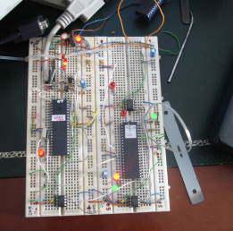
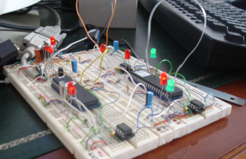
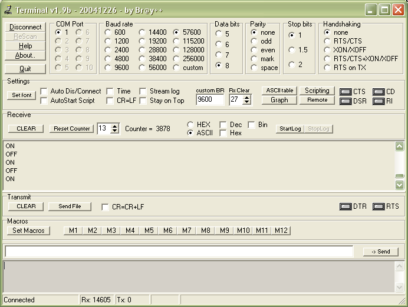

J1939.c CAN Bus plus RS232 bridge
<<back to main pageMicrochip provides source code
 to implement a simple
J1939.c
CAN library
to implement a simple
J1939.c
CAN library  (Kim
Otten et al.)
(Kim
Otten et al.)This is a very good start - but perhaps many folks will stumble (like myself) even over minor difficulties.
One useful way to help us understand what is going on the J1939.c CAN bus is to have one device with a UART, looking to the bus and dumping some "debug" strings to the PC's RS232. Everybody likes this.
I made such a setup, and would like to share it with anyone who can benefit from it.
| Let me state
that I am not an expert neither
in C language, neither in
CAN - my setup works, but is not nice nor elegant, in fact it is quite
ugly:=). I hope that in the next months things (and myself as an embedded programmer) will improve! |
The hardware setup
Materials:- Breadboard, power supply etc.
- PIC18F4580 2 units
- MCP2551 2 units
- XTAL 20 MHz 1 unit (one PIC supplies the system clock)
- MAX232
- several LEDs, resistors, decoupling capacitors etc.
| Should someone draw the schematic and send it to me, I will add it to this page with full credits to the author. |
One PIC18F4580 (CAN ID = #129) acts as the RS232 bridge, is clocked by the 20MHz XTAL, and provides the system clock to the other PIC thru OSC2.
So both PICs Fosc = 20MHz.
The original J1939.c uses 2 devices, numbered CAN ID #128 and #129, and defines in both devices RB4 as a switch input, and RD0 as LED output.
Toggling the switch in one unit sends a CAN message to the other unit, commanding it to toggle the LED in RD0:
| CAN ID #128 | sends LED
toggle command to #129 accepts command to toggle own LED |
| CAN ID #129 | sends LED
toggle command to #128 accepts command to toggle own LED |
In my setup when a command is received from #128, device #129 (the RS232 bridge) toggles the LED and also outputs thru the serial port the string "ON" or "OFF", to be displayed on a PC terminal program.

As you see, the modification is a very small one, but gives us the full help of the RS232 as a debugging tool.
I hope that in the next weeks this setup will evolve to something more useful, that is, a full CAN bus "spy".
Because the 40 pin DIPs use most of the breadboard real estate, instead of true switches, I just used a piece of wire, connecting it to GND or VDD alternatively.
Having PORTB pull ups enabled, the traffic generated on the CANbus is very small.
But if you disable PORTB pull ups, then when the wire is left unconnected, the noise induced "switching" generates so much traffic, that sometimes the UART soft buffer is overrun - 57600 baud is not that much.
|  | < |
The firmware setup
Other then the J1939.c CAN library source
code , I used UARTintC.c
etc. generated
with Application Maestro, both slightly modified.You must use 2 separate projects, one for the CAN-Usart PIC (#129), the other for the CAN-only PIC (#128) that send commands to the former:
download CAN-UART project (#129)
download CAN-only project (#128)
Unzip, build etc., or just use the precompiled .hex.
But there is a caveat:
Please notice that the original folders were: D:\CAN\uartCAN (for device #129) D:\CAN\example1a (for device #128) D\CAN\output (for common output files) and the C18 linker was in: I:\MCC18\lkr etc. Rember, MPLAB projects use absolute paths (am I wrong?) therefore you must edit the *.mcp files to reflect your folders setup! |
So you program one PIC18F4580 and label it #128, the other you label it #129 and plug them into the breadboard; when powered, depending on how you handle the switches, the LEDs should light up or not.
All together now
The next job is to connect the serial port of #129 to your PC.I used as terminal the excelent Terminal v1.9b provided by Bray++, which goes now up to 256000 baud (will need that later on).
Configure it to 57600 baud (see figure).
Connect everything (remember, if you have been using PicStart + to program the parts, and your PC has just COM1, to "disable" the programmer prior to "connecting" the terminal, otherwise an error will be raised.
Now upon power up, 10 strings "Main Uart" are sent to the terminal, so you know the circuit is OK, and then toggling the switch in #128, the terminal will show:
"ON"
and
"OFF"
accordingly.
It will look something like this:

Thats all, folks.
Please let me know of any broken links, missing parts etc. you may find here.
Next issue will be more sofisticated.
 Notice: Someone told me that he could not "connect" Terminal.exe; as I said above, if your PC has only one serial port (COM1), and you have been using MPLAB IDE + PicStart plus to programm the parts, do not forget to "disable" (freeing the port) the programmer before trying to connect Terminal.exe! |
<<back to main page
©Rec (recursos.pt@gmail.com)
06-02-15